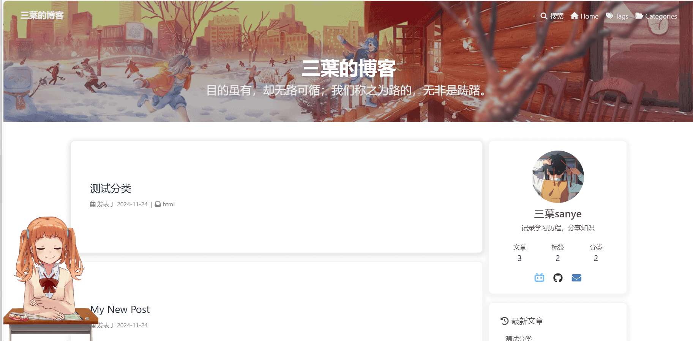
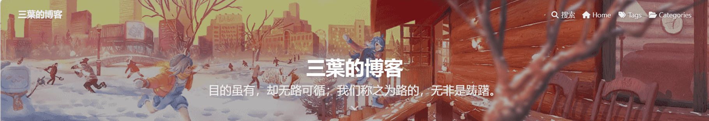
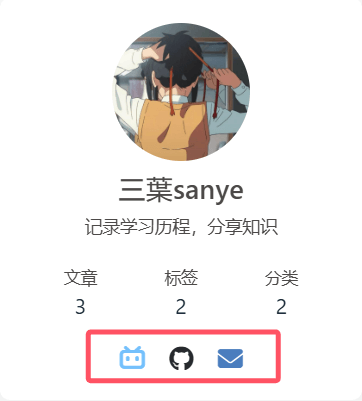

什么是hexo?
Hexo 是一个快速、简洁且高效的博客框架。 Hexo 使用 Markdown（或其他标记语言）解析文章，在几秒内，即可利用靓丽的主题生成静态网页（html）。
其他博客框架：vuepress , gatsby；前者适合vue开发者，后者适合react开发者。
安装hexo
需要提前准备的工具：vscode, git, node.js；去对应的官网下载即可。
在任意位置新建一个文件夹，右键选择用vscode打开；或者直接打开vscode新建一个文件夹，取一个合适的名字，比如blog；右键文件夹，在当前文件下打开终端，执行以下命令：
1 | npm install -g hexo-cli //全局安装hexo |
好了，再访问http://localhost:4000就能看到运行在本地的博客了
hexo常用指令
1 | hexo clean //清除打包后的文件，即删除public文件夹 |
项目结构分析
- node_modules:存放安装到本项目的npm包
- scaffold：存放md文档模板
- page.md:页面的模板
- post.md:博客的模板
- source：存放博客和页面的文件夹
- _post: 存放博客的文件夹
- categories：存放分类页面的文件夹，通常只有一个文件
- tags：存放标签页面的文件夹，通常只要一个文件
- theme：存放下载的主题的文件夹
- _config.yml: 博客的配置文件
- _config.主题名.yml:主题的配置文件，自定义主题配置的地方
更换主题：butterfly
hexo自带的主题也许不是那么好看，没关系，hexo提供了丰富的主题给我们选择，我们可以去官网上查找，或者去GitHub上查找（推荐），下面我们以GitHub为例。
在国内直接访问github很不稳定，需要借助加速器，这里推荐steam++
没有账号的用自己的邮箱注册一个即可，登录后在home主界面搜索hexo themes,查找自己喜欢的主题,这里我们选择butterfly主题。
- 下载
1 | git clone -b master https://github.com/jerryc127/hexo-theme-butterfly.git themes/butterfly |
在你的博客文件夹的themes文件夹中,就能看到butterfly文件夹，删除.git文件夹。
在博客根目录下新建_config.butterfly.yml文件，复制themes/butterfly文件夹下的_config.yml文件内容，粘贴到该文件。
后续自定义博客都在_config.butterfly.yml文件下进行。
新建博客文章
1 | hexo new 文章名 |
执行这条命令之后你就能在source/_post文件夹下看到一个新的md文件，它就是你编写博客的地方。
md文件结构分析
- Front-matter: 是 markdown 文件最上方以 — 分隔的区域,不是写博客的区域，而是配置博客的区域
- Page-Front-Matter: 用于 页面 配置
- Post Front-matter：用于 文章页 配置
具体是配置什么的直接看文档Butterfly 文檔(二) 主題頁面 | Butterfly
- 用md语法写博客的区域
修改博客下方的文章链接
在根目录下的_config.yml文件中修改,确保url是你博客部署的网址，替换掉默认的示例。
1 | # URL |
修改博客分享方式
1 | share: |
新建分类
为了方便我们博客文章的查找，我们很自然的会想到给博客分类，执行如下命令：
1 | hexo new page categories //本质是在创建一个页面page |
你会找到 source/categories/index.md 这个文件
修改这个文件的Front-Matter部分：
1 | title: 分类 |
然后我们在每篇博客的Front-matter部分就可以通过categories属性给文章分类。示例：categories: ‘book’
注意：如果我们未创建分类页面，点击分类标签是会报错的，提示找不到该页面。
新建标签
我们还可以给每篇文章添加多个标签，执行如下命令：
1 | hexo new page tags //本质也是在创建一个页面page |
你会找到 source/tags/index.md 这个文件
修改这个文件的Front-Matter部分：
1 | title: tags |
然后我们在每篇博客的Front-matter部分就可以通过tags属性给文章添加标签，一篇文章可以添加多个标签，示例：
1 | tags: |
注意：如果我们未创建tags页面，点击tags标签是会报错的，提示找不到该页面。
自定义主页
博客的主页就是博客的首页，如下：
自定义主页的详细内容见官方文档Butterfly 文檔(三) 主題配置 | Butterfly，下面我只介绍我遇到困难的部分。
自定义菜单
在_config.butterfly.yml文件中设置：
1 | menu: |
当然这些都是我认为最基础的菜单设置，||前面的表示的是页面的路径,后面表示的是图标。
在自定义这部分的时候我遇到了一个问题，就是无论如何配置，菜单上都会有music和video选项，原因是在themes/butterfly的_config.yml文件中，music和video选项是默认选中的。Hexo 会自动合併主题中的 _config.yml 和 _config.butterfly.yml 里的配置，如果存在同名配置，会使用 _config.butterfly.yml 的配置，其优先度较高。参考文档Butterfly 文檔(一) 快速開始 | Butterfly
添加搜索功能
如果能根据本地博客内容实现文章搜索，那实在是太方便了；hexo提供了多种搜索方式，其中本地搜索最容易实现。
前往博客根目录，打开cmd命令窗口执行:
1 | npm install hexo-generator-search --save |
然后在_config.butterfly.yml文件中配置即可
1 | search: |
更多搜索方式参考文章：Hexo + Butterfly 键入搜索功能 - 简书以及butterfly官方文档
自定义首页图片
1 | # 禁用顶部图片 |
这三个配置项默认并不在一起，但是我为了方便配置把它们放到了一起。
引入图片
通过网络图片的形式引入
优点：减小打包体积
缺点：博客部署在github使用
网络图片可能存在跨域问题通过本地图片引入
优点： 不存在跨域问题，直接使用本地图片即可。
引入方式：在根目录下的source文件夹中新建一个
images文件夹，然后本地图片都放里面(假设放入了一张图片xxx.jpg)，然后博客文章就能通过../images/xxx.jpg的相对路径来访问了。而且为了让我们的博客图片无论在本地直接打开博客md文件的时候能正常显示，还是在部署到本地或者远程服务器的时候能正常显示，我们需要用img标签来展示我的图片，而不是使用
这种md语法。
B站banner
用过B站的小伙伴应该都注意到了B站首页banner图片的特色，我们也可以用它来装饰自己的博客！
参考文章：Bilibili Dynamic Banner | Akilarの糖果屋
大家跟着这篇文章做就行，我跟着做完后发现有个问题，主页还是无法显示B站轮播图，自己研究了一下发现是bilibili-banner.pug文件的问题，第一行if (!is_home())就指定了bilibili banner的结构不能被添加到主页面，于是我把这个判断改为if (is_home())，即只在首页添加，如果删掉这个判断，就是在文章和首页都添加。
还有一个问题就是，正常情况下，我们把鼠标放到bilibili banner上左右移动，图片会跟着移动并且内容会随之改变，但是因为header中其他元素占据了太多空间且布局在banner顶部，会阻碍我们鼠标与banner交互，我们可以选择删除这些结构，或者修改这些元素的css样式。
我们额外添加一条样式：pointer-events: none;可以让指定元素忽略所有鼠标事件，从而使事件穿透到下层元素，这个属性还是可被继承的。
1 | //文件路径：\themes\butterfly\source\css\_layout\head.styl |
还能优化的一点就是因为B站banner放到移动端展示效果不好，所以原文章作者使用了媒体查询，当视口宽度小于1000px的时候，banner的样式就会变为display:none，此时如果我们未设置index_img那首页就是纯蓝色背景不好看，我们检查页面文档能发现，banner是一个宽高都是100%的div元素，而index_img是背景图片，二者是不冲突的，如果banner存在，则会覆盖，压住index_img，如果banner隐藏，index_img就能显示出来，所以建议最好再指定一下index_img，这样移动端也能看到自定义的index_img。
自定义社交图标
如上图就是社交图标，可以在_config.butterfly.yml文件的social属性中配置，点击即可跳转到相关网页。
1 | social: |
书写格式 图标名：url || 描述性文字 || color
图标名可在这个网站上查找：fontawesome
统计网站访客数目
我们的博客是纯静态网页，没有涉及到与后端的数据交互，但是我们如果想要实现统计网站访客数目的功能，就必须借助后端，那该怎么实现呢？幸运的是，有人愿意免费给我们提供服务器来存储我们网站的访客数据。
不蒜子 - 极简网页计数器 是一个轻量级的网站访问统计工具，它通过简单的 JavaScript 代码嵌入到网页中来实现访问次数的统计。
大致原理
当用户访问包含 Busuanzi 脚本的页面时，该脚本会在用户的浏览器上执行，然后发送一个jsonp请求，请求头中的Referer字段会携带当前网站的url，busuanzi服务器会从Referer字段中提取出网站的域名等信息，并将该域名对应的网站访问次数加1，再返回一串js代码，这串代码中包含了网站被访问次数等信息，然后浏览器会执行这串代码，把返回的信息渲染到页面上。具体原理参考源码。
如官网所示，我们只需在网页中引入一个js文件就行，对于butterfly主题的hexo博客，用上这个工具更是简单，我们只需要在主题配置文件中启用这个插件就行：
1 | busuanzi: |
1 | # 确保开启webinfo，不然也不会显示访客数据 |
博客网站访客量虚高的原因。
我们的博客部署在本地localhost:4000,大家都用这个域名测试博客，访客量当然特别高了，部署到自己的网站后就没问题了。
我们的博客网站所在域名之前可能已经使用过busuanzi提供的服务了，但是无论我们是按照官网的指示直接引入js文件，还是在butterfly的主题配置文件中开启相关配置，请求获取的都是官方的js文件，也就是源码，我们可以通过直接在浏览器导航栏输入官方js文件的网址（在官网已给出），从而下载，修改源码来解决这个问题。我们把下载好的源码放在
themes/butterfly/source/js目录下，并在源码中做如下修改：
1 | // 我们先分析这三个字段什么意思 |
然后在主题配置文件中修改busuanzi的默认cdn链接，指定为本地文件。
1 | CDN: |
当然，如果我们的博客因为部署的域名改变了，需要加上先前的访问次数，也可以使用这种方式来实现。
live2D
谁不想给自己的博客界面添加一个可爱的看板娘呢？来看看如何实现吧。
在github上有个star非常多的，基于hexo的live2D项目：EYHN/hexo-helper-live2d: Add the Sseexxyyy live2d to your hexo!
部署起来也非常方便。
1 | npm install --save hexo-helper-live2d |
安装完成之后再配置
1 | live2d: |
详细配置请前往原项目查看
其他可用模型：xiazeyu/live2d-widget-models: Model library for live2d-widget.js（交互功能不如默认模型）
其他live2D项目：stevenjoezhang/live2d-widget: 把萌萌哒的看板娘抱回家 (ノ≧∇≦)ノ | Live2D widget for web platform
永久链接
“Hexo 文章链接默认的生成规则是：:year/:month/:day/:title，是按照年、月、日、标题来生成的。
这样的话，生成的链接非常长长长长长，而且如果我们的 Markdown 使用中文标题，那就更惨了，URL 一转码，将是一场灾难。
更难受的是如果我们修改了文章的日期或者标题，那么将导致链接改变，别人或者你分享出去的文章就会 404，这非常的蛋疼啊，所以就有了这种插件，不论你如何修改文章的日期、名称，只要不改变 footer-matter 中的 id 值，那么文章链接永远不会变。”
该话引用自Hexo 博客生成永久链接 | Ordis’Blog
大家跟着这个博客去敲代码就好了。
自定义页脚
butterfly主题配置文件的footer.custom_text属性是支持传入html解构的，而其他footer属性不支持，我们可以选择关掉其他footer属性，把要定义的解构全写footer.custom_text里，可以放入一些彩色图标，添加更多结构，提供更大的自由度。
加载动画
如果我们的博客部署在GitHub，或者我们的博客打开需要加载较多的网络资源，就会导致我们的博客打开很慢，这个时候通过加入加载动画就能优化读者的阅读体验。
参考文章：多种加载动画
我在做自己的博客的时候并没有完全跟着博客敲代码，而是先大致了解一下代码的逻辑，然后只选择了其中的一种加载动画—钢铁之心，
如果有像我一样不喜欢加载完成后展开的过渡效果的，可以对source/css/_layout/loading.styl文件做如下修改
1 | &.loaded |
意思就是，页面加载完毕之后，直接隐藏loading-box。
如果要手动实现加载动画的话，除了一些css代码，核心就是window的load事件；
加载动画能够显示出来，也需要加载并解析它需要的css文件，为了让加载动画尽快显示出来，我们可以选择把这些css代码内联到html文件内，这样渲染加载动画无需等待其他首屏关键css文件，但是我们的博客有许多html页面（每篇文章都是一个独立的html页面），手动内联也太麻烦了…
如果加载动画需要的css代码，是通过link标签引入的，还要等待其他首屏关键css加载解析完毕，才能开始渲染加载动画，也就是说，开始加载css动画了，说明首屏关键css都加载完毕了，可以自己使用3G测试。
修改鼠标样式
修改起来也是很简单的，直接跟着文章敲代码就行。
大家也可以自行去查找更多的鼠标样式
上述鼠标样式使用的css文件是网络文件,现在链接好像已经失效了，我们可以选择把鼠标样式图片（.cur文件）下载到本地的themes\butterfly\source\img目录下然后通过绝对路径引入。如果你觉得某个博主的鼠标样式好看，也可以右键检查页面，查看网络日志，获取博主鼠标样式图片的链接然后直接下载到本地。
参考：
hexo+butterfly主题利用css部署网站鼠标指针样式 | JiangnanPsalter
Hexo|Butterfly修改鼠标指针样式 | 珍珠巧克力
SEO优化
提高我们的博客在浏览器中的搜索排名，从而提高我们的博客的曝光量，让更多人看到。
下载插件hexojs/hexo-filter-nofollow： 自动为所有外部链接添加 nofollow 属性。
通过给博客中引入的外部链接（比如a标签）添加
rel="noopener external nofollow noreferrer"属性来优化SEOnoopener: 防止新打开的页面通过
window.opener属性访问原始页面的window对象。external: 表示链接指向的是外部网站。
nofollow: 告诉搜索引擎不要将这个链接视为对目标页面的信任投票；防止页面的链接权重传递给外部网站，有助于保留更多的链接权重；如果你的博客中包含指向低质量或垃圾网站的链接，使用
nofollow可以减少这些链接对你的网站造成负面影响的风险。下载插件Baidu Sitemap generator plugin for Hexo
下载并配置好后执行hexo g，会自动生成博客的站点地图。需要在百度搜索资源平台注册账号，添加并验证自己的网站，然后提交网站的sitemap.xml（站点地图）, 从而提高自己的网站在百度中的SEO
如果购买的是国外域名，验证可能因超时而失败
下载插件hexojs/hexo-generator-sitemap: Sitemap generator for Hexo.
下载并配置好后执行hexo g，会自动生成博客的站点地图。然后可以选择去google或者bing的资源平台验证自己的网站并提交站点地图，比较推荐提交到Home - Bing Webmaster Tools，不需要科学上网。
部署博客到github
部署方法
方法1：可以通过https://[username].github.io的格式来访问部署的资源
仓库名必须为
[username].github.io，这样貌似必须通过https://[username].github.io/[username].github.io的方式来访问，其实只需要通过https://[username].github.io的方式来访问就行。
打包产物放到
master分支优点是路径短，更适合用来做博客
方法2：可以通过https://[username].github.io/[repo]的格式来访问部署的资源
- 可以自定义仓库名
- 更适合用来展示demo
- 打包产物放到
gh-pages分支
我们使用第一种方式，还要先下载hexo-deployer-git，这个插件的作用可以自行查找。
1 | npm i hexo-deployer-git |
再在_config.yml文件中进行相关配置
1 | deploy: |
然后执行
1 | hexo deploy |
如果部署失败，可以尝试开启steam++加速github再次部署。
参考资料：【干货】Luke教你20分钟快速搭建个人博客系列(hexo篇) | 自动化部署在线编辑统统搞定 | 前端必会！_哔哩哔哩_bilibili
但是部署到github pages有一个明显的缺点，就是加载速度很慢。为什么加载速度很慢呢？因为github pages服务器在国外，离我们较远；距离越远，意味着要经过越多的网络结点，每个节点都会引入额外的延迟，遇到网络拥塞的概率也越大。
自定义github域名
为了能让我们的域名更有个性（不会提高网站的加载速度），我们可以选择自定义域名，这需要我们购买域名；域名购买国内国外的都可以，只要域名解析后对应的服务器不是中国境内的，就不需要备案。可参考国内域名一定要备案吗？ - 知乎
国外域名购买流程比较简单，比较推荐的是namesilo
Namesilo 域名购买及使用教程（附 Namesilo 优惠码） - 知乎
购买域名后，我们就能自定义我们的域名的dns解析方式；打开域名管理，在我们的域名下添加一条CNAME类型的dns记录，让对自定义域名的解析转变成对用户名.github.io域名的解析
具体域名解析方式已经在《前端面试---网络》一文中介绍，下面只给出几幅图。
未自定义域名前的请求流程

自定义域名后的请求简化流程，比如我在namesilo网站上购买了sanye.blog这个域名，并在我的域名的dns解析记录下添加一条CNAME记录，让对域名www.sanye.blog域名的解析指向用户名.github.io域名的解析
拿到ip后访问对应的githubpages服务器，请求中携带的host是www.sanye.blog，因为我们在github上配置了，所以github知道对应的默认域名，然后就从默认域名中提取出用户名，根据用户名返回对应的资源。
添加自定义域名后，对原域名的访问也会重定向到自定义域名。在你的 GitHub Pages 仓库中，GitHub 会生成或更新一个名为 CNAME 的文件，其中包含你的自定义域名（例如 www.sanye.blog）。这个文件告诉 GitHub 你的站点应该通过哪个自定义域名访问。
建议在github pages中开启enfore https这样直接访问自定义域名也不会以http协议加载，而是强制用https协议访问，不会出现“网站不安全”的警告。
具体步骤参考文章：
Github 部署个人网页 | 自定义域名 - 知乎Github 部署个人网页 | 自定义域名 - 知乎
上述这篇文章“购买国内域名就要备份的说法是不准确的”
然而我并不建议给github pages自定义域名🤣，因为即便自定义了域名，也不会提高我们博客的访问速度，因为我们的博客还是部署在github服务器上的，访问速度还是很慢，为什么要浪费宝贵的域名呢，因为我们是给[用户名].github.io这个仓库自定义域名，这就意味着对[用户名].github.io这个域名的解析都会重定向到我们自定义的域名，这就导致，其他仓库，原本的访问url格式是，https://[username].github.io/[repo]，即便不自定义域名，也会被重定向到https://自定义域名/[repo]，所以
最好还是把博客copy到vercel然后给vercel服务器上的项目自定义域名，参考下文。
如何提高博客的加载速度
我们可以选择把我们的博客部署到其他平台。
参考使用第三方托管平台部署博客 | Akilarの糖果屋；这篇文章介绍了其他的博客部署平台，
gitee：国内网站，但是目前pages功能停用了，除此之外还有其他问题;Netlify：国外网站，免费，但是注册麻烦，需要hotmail或者gmail等国外常用邮箱，一顿操作下来发现还是白忙活🥲;
webify：腾讯的产品，要money，没有尝试过;
vercel：注册简单且免费，直接使用
github账号登录即可，在国内的访问速度也比github pages要快，并且何以导入git仓库，部署起来非常方便，后续在对应仓库中推送新的提交也会自动部署，省心省力。部署步骤可参考文章：如何使用 Vercel 部署自己的 Hexo 博客_vercel部署博客-CSDN博客
在Vercel上部署好静态站点之后，会获得哦一个自动分配的域名，以vercel.app结尾，就像
githubpages也会给默认域名一样，不幸的是，这个域名被dns污染了（被墙了），有人不想我们这么简单就能使用这个网站，我们无法通过这个自动分配的域名访问到我们的项目；但是我们还是有解决办法的，比较推荐的就是自定义域名，按照提示操作即可，又不幸的是，自定义域名使用到的cname-vercel-dns.com也存在被dns污染的问题，对此网上常见的解决办法是把cname-vercel-dns.com替换成固定的ip值，或者替换成cname-china.vercel-dns.com，还有一种方法是借助cloudfare，把对cname-vercel-dns.com的解析工作交给cloudfare，这个工作默认是你购买的域名的服务商提供的。个人猜测：如果购买的是国内的域名，使用的就是国内的dns解析服务，就存在被墙的风险，所以推荐购买国外域名，使用国外的dns解析服务，也许就不会有这个问题，至少博主使用国外的域名暂时没遇到什么问题
打包静态资源
打包html,js,css
执行hexo g指令后，我们可以看到public文件夹中生成了一系列的静态文件，比如html,css,js,这些文件的内容格式是非常容易阅读的，显然，他们是未经过压缩的，我们可以借助打包工具gulp,实现对这些静态资源的打包，然后再部署到网站上去，能在一定程度上提高我们博客的加载速度。
参考文章：使用gulp压缩博客静态资源 | Akilarの糖果屋打包图片
其实官方文档Butterfly 文檔(六) 進階教程 | Butterfly也提供了相关的打包方法，本质就是对本地的图片压缩后再使用，减小图片体积。
cdn加速
cdn加速在《前端面试—网络》一文中以及介绍过了，不赘述。
这里谈谈如何如何给国外域名使用CDN加速
可参考文章：Github 部署 | CDN 加速网页，速度嗖嗖的快！ - 知乎
这篇文章其实还是有问题的，虽然腾讯云能给国外域名提供cdn加速，但是
加速区域只能选择国外，加速国内就要求域名备份(当然国内域名开通CDN加速也要备份)，也就是说，我们在源服务器（github pages服务器）上的部署的博客文件只能被国外的cdn服务器缓存，对在国内访问网站的加载速度的提高并不明显，而且开通cdn加速后还要自己给自定义域名申请ssl证书(因为存储我们博客的cdn服务器需要ssl证书，才能以https协议访问)，这个过程还要验证域名，而且不知道为什么一直通过不了验证，干脆放弃……使用腾讯云给我们的域名接入cdn加速后，会得到一个
CNAME，然后我们在我们的域名的dns记录上添加对应的CNAME记录即可。还有就是在上面的文章中，给我们的国外域名加速，给
cdn服务器配置的源站地址是github pages服务器的四个ip地址，查阅资料后发现，其实源站地址指定为用户名.github.io这个域名也是可行且容易理解的，所有形如用户名.github.io的域名都只会被解析到这4个ip地址中的一个，也就是说这4个ip可以对应多个域名，一个域名也能对应不止一个ip地址，这些 IP 地址通常指向相同的资源。具体来说，这些 IP 地址背后的服务器存储的资源是相同的，但它们可能分布在不同的地理位置或数据中心，以实现负载均衡和提高可用性。在阅读butterfly文档的过程中发现竟然提供了cdn加速的方案？了解之后发现是一些国内的网站，主动给一些国外的常用的前端资源提供了cdn加速，并免费提供访问的cdn链接，然而我们的博客生成静态资源显然是享受不到的这种免费的cdn加速的。但是如果你使用到了某些外部链接，可以考虑把他们替换为经过cdn加速的链接 ，从而提高博客加载速度。
总之给部署在github上的博客接入
CDN加速是一件很麻烦的事情，其实用vercel部署自己的博客访问速度其实也很nice了，因为vercel提供了免费的cdn服务。
优化开发体验
即便我们把自己的博客部署在本地服务器localhost:4000来测试，也需要加载外部资源，比如butterfly主题的样式表等其他资源，这就导致我们开发过程中，博客首页的渲染速度也非常的慢。对此，我们可以通过下载butterfly提供的插件``hexo-butterfly-extjs`来解决，将这些需要的外部资源都下载到本地，从而极大程度减少加载外部资源的时间，从而提高渲染的速度。
1 | CDN: |
但是我把这个包下载到开发依赖中（dependencies），编译后这个包也会被打包进去(PluginSrc文件夹)，最后部署出现了错误，提示我提交了隐私信息🥲；最终我是删掉了.deploy_git文件夹(不过我的commit的记录也没了)，卸载这个包才顺利部署。
其实只要把这个包下载到开发依赖（devDependencies），编译的时候，设置third_party_provider的值不为local，这个包就不会被编译进最终文件。
感想与结语
hexo+butterfly框架能帮助我们迅速开发一个美观实用的博客，这些框架，主题，以及相关插件的诞生基于开发者雄厚的html，css，js等前端知识积累；做为刚入们的前端开发者，我也知道给光看文档能学到的实在是有限，在网上找资料学到的也是偏向实践，想要深入了解原理，自己做出这些效果，还得多学多练，打好自己前端基础。
如果你还想进一步美化自己的博客，给自己的博客添加更多的功能，你可以选择不断的阅读butterfly官方文档，也可以去网上查找更多的资料，以下是我推荐的一些资料，希望能帮助到你。
- Hexo官方文档
- 一个非常全面的butterfly魔改教程：页面 | Butterfly主题美化教程
- md语法学习
- butterfly主题官方文档：Butterfly - A Simple and Card UI Design theme for Hexo
- NameSilo官网
- 鼠标指针 - 光标 - 电脑鼠标指针下载 - 致美化 - 漫锋网
- demo